Reporting
Every report answers one question, and proves it.
60 reports for organizations, 11 returns to institutions and 39 reports for the consoles that run the market. Each is built from the same facts that settle the money, opens with the answer, and can be issued as a numbered, hashed document that a lender or auditor reads without a seat.
Read a real report.
Eight reports printed by the platform from its demo estate, page for page. The SIMULATED stamp is the platform's own: every report built on simulated data carries it on every page.
Did we make money on energy this month, and where did it come from?
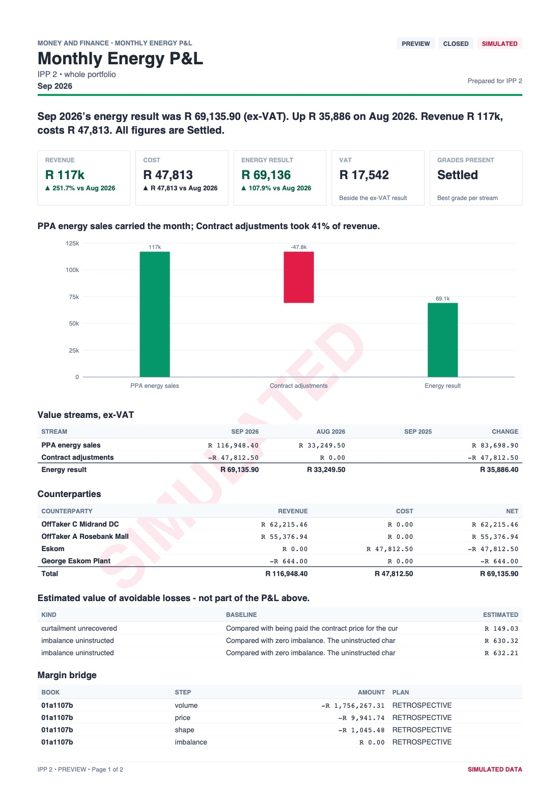
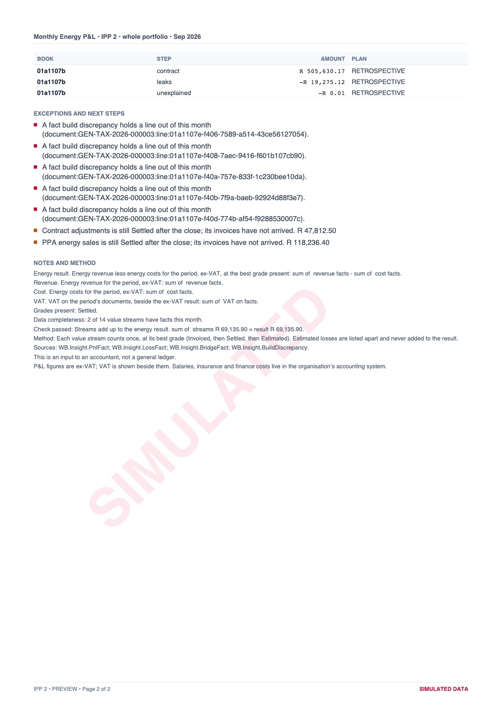
Did this contract deliver what it promised this month, and what does each party owe?
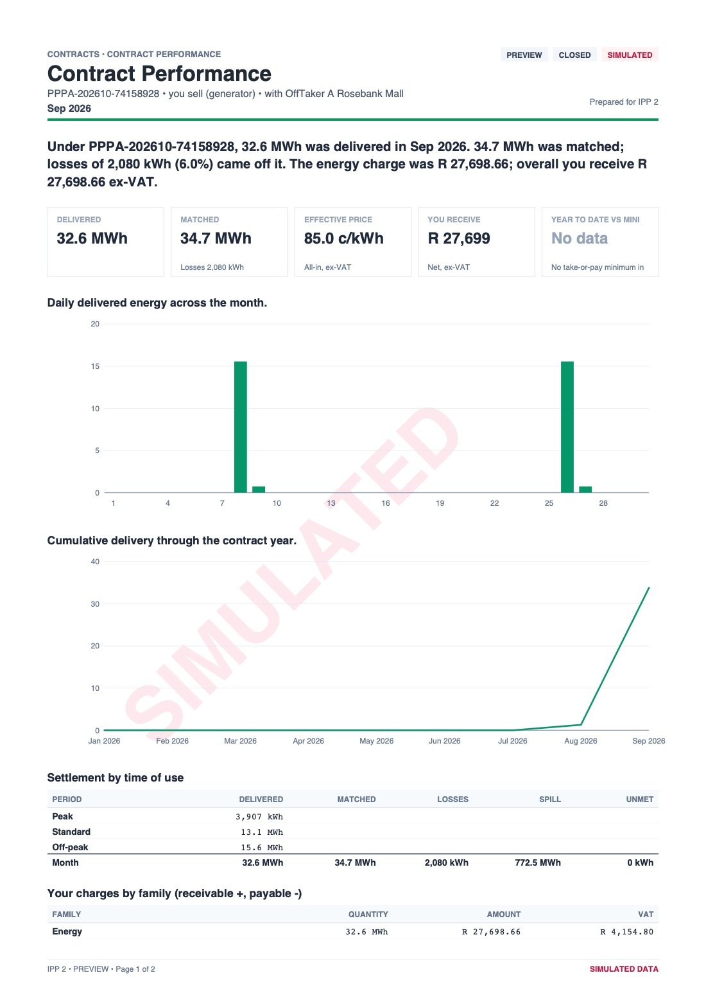
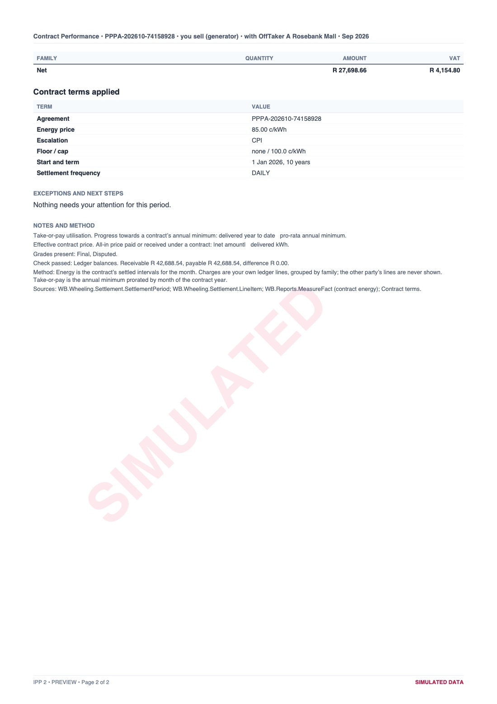
Can we prove no network charged twice and no energy was sold twice?
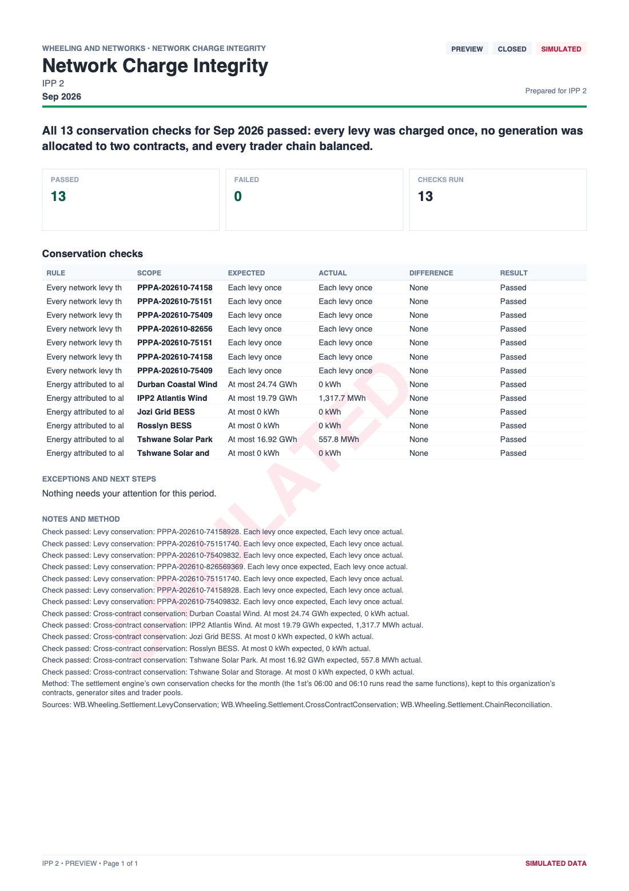
How did our virtual PPA settle this month, and is it working as a hedge?
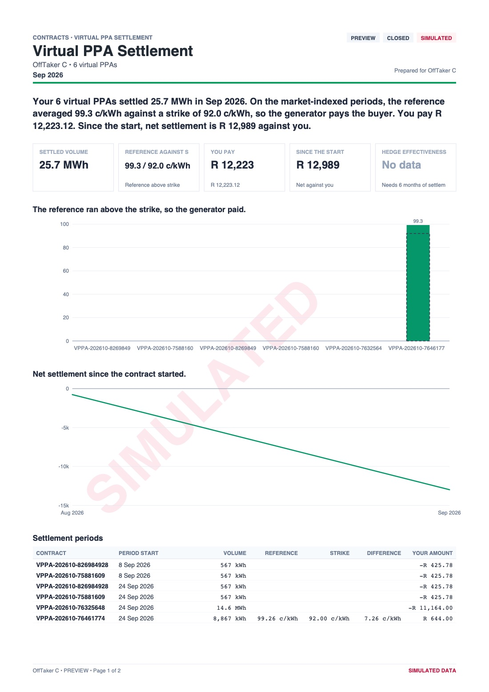
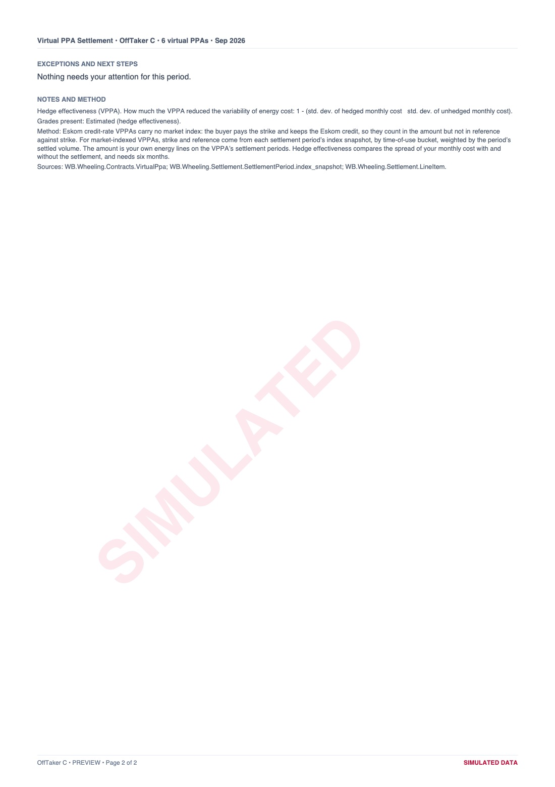
What did it cost to move our energy across the networks, and how much was lost on the way?
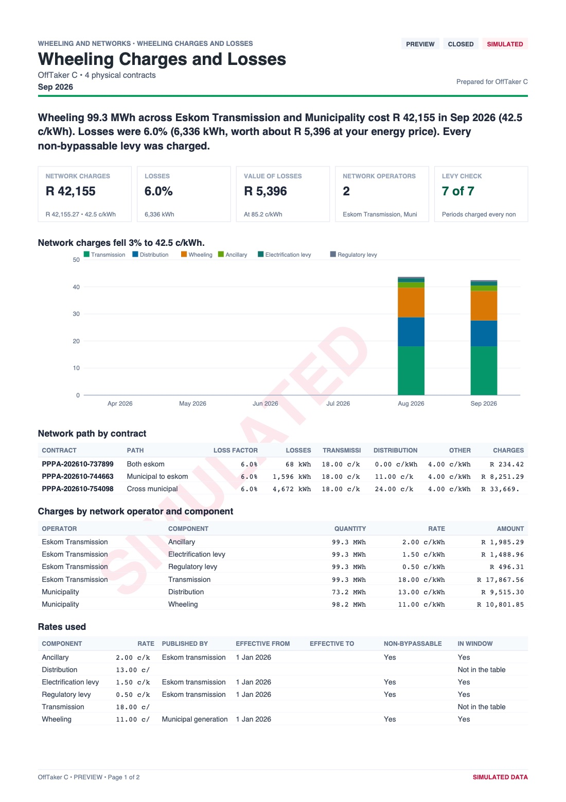
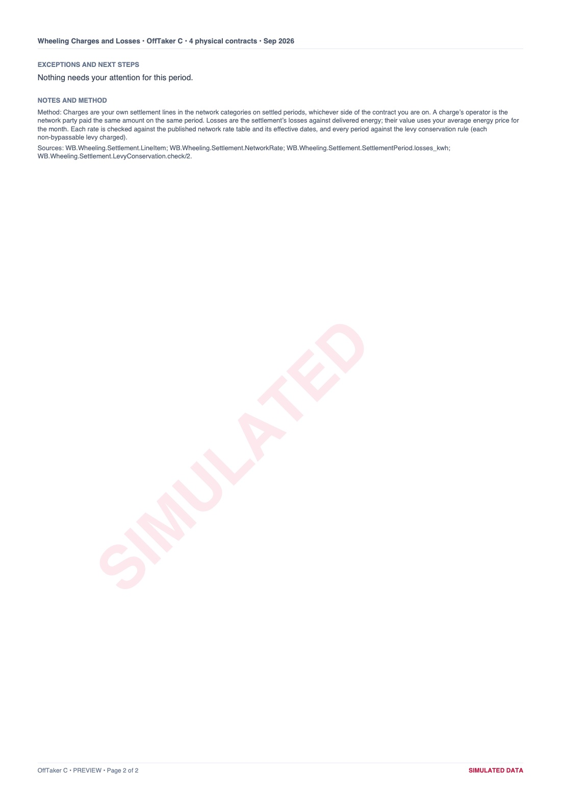
Are we within our risk limits, and how close are we to breaking one?
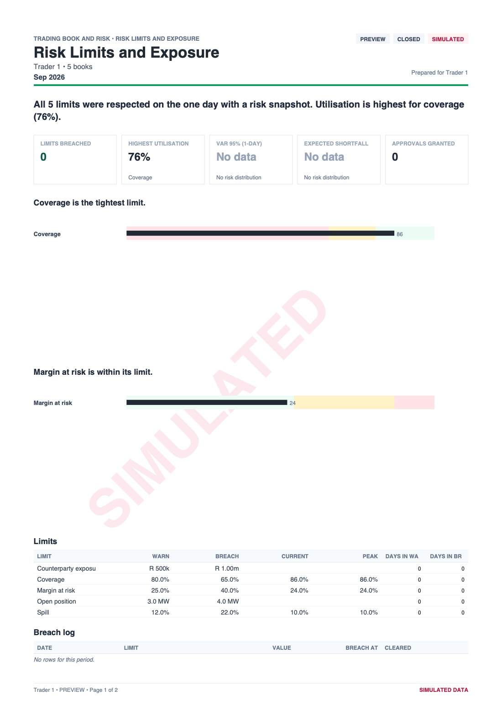
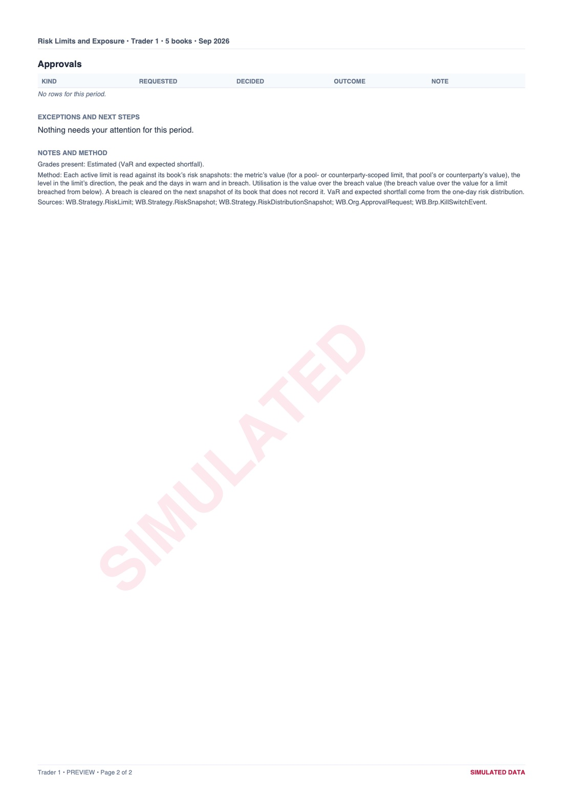
How much carbon tax do we owe for the year, and how was it worked out?
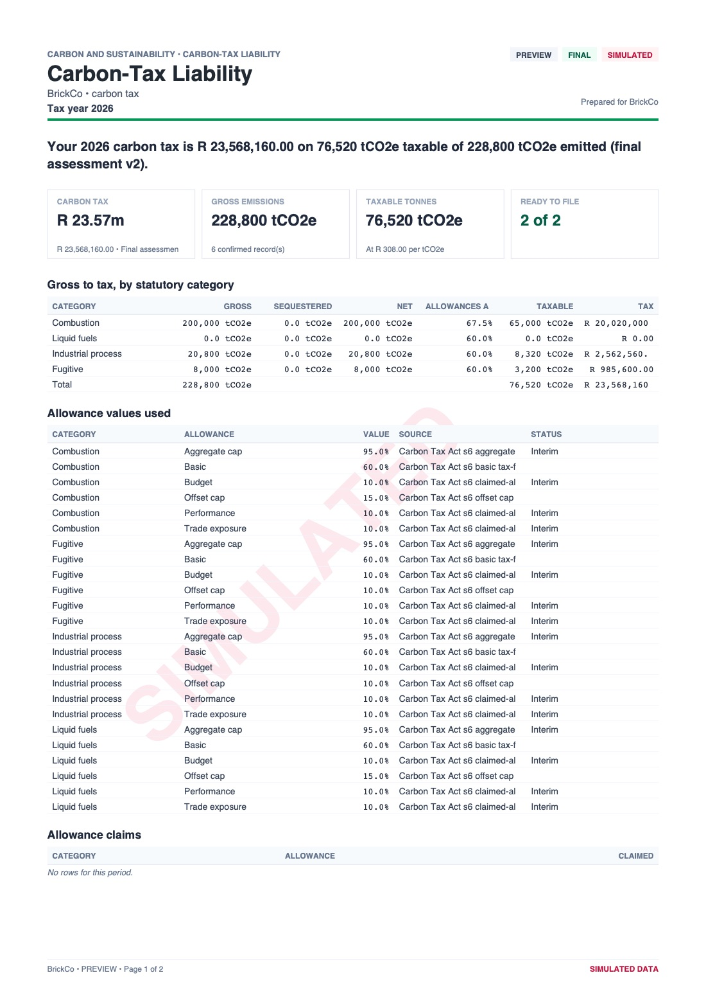
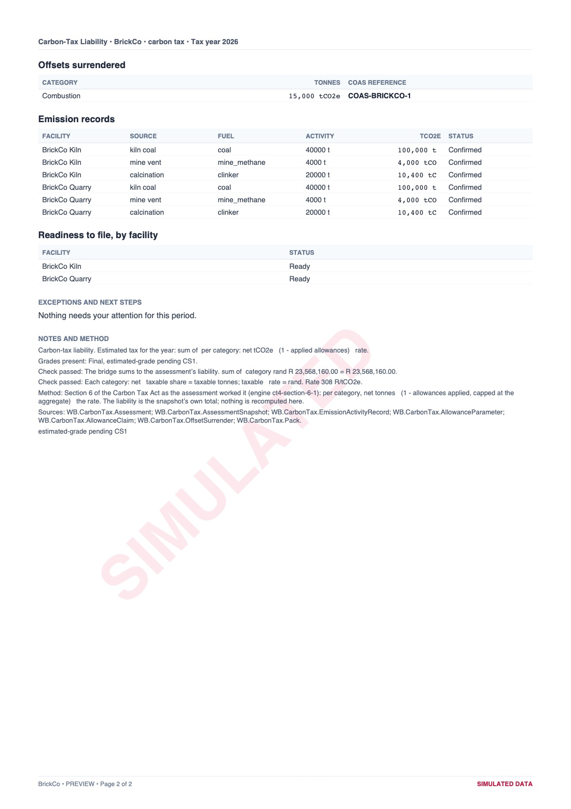
How was the energy wheeled over Eskom's network allocated to each customer account?
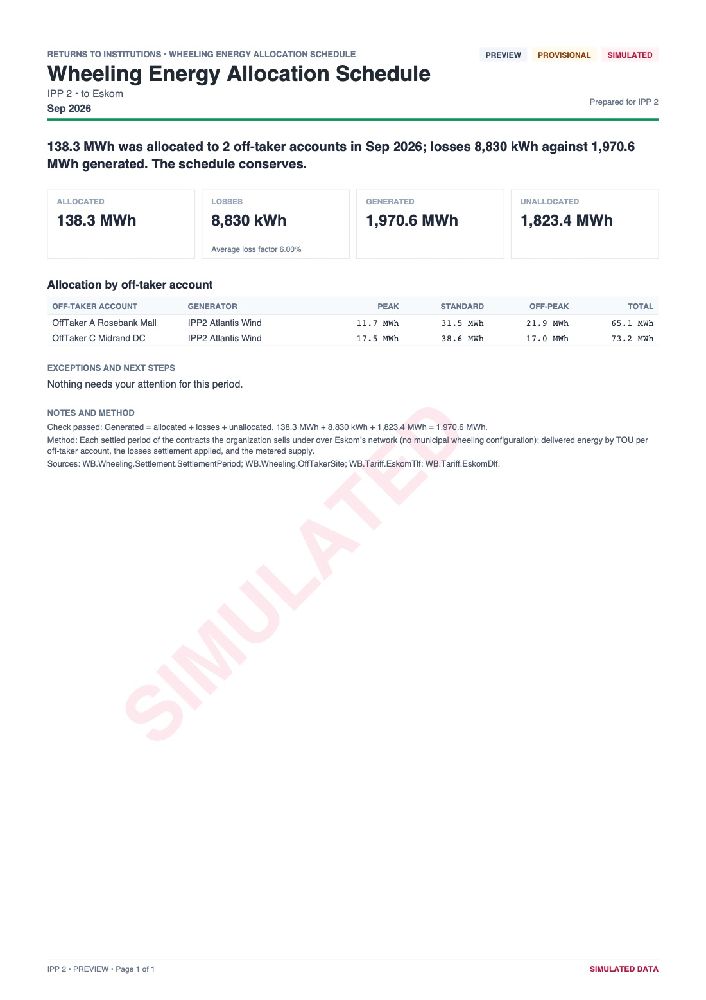
One shape, every report.
The answer first, then the story in a chart or two, then the detail, then what needs doing, then the method and its sources. On screen and on paper, every report reads as if one hand made it.
- 1Header and statusCategory, report, organization and period, stamped PROVISIONAL, CLOSED, FINAL or RESTATED so the reader knows how settled the figures are.
- 2The verdictOne plain sentence that answers the report's question. The reader has the answer in ten seconds.
- 3Headline figuresThree to five figures, each compared with something: last month, plan, the contract or the grid.
- 4The story in a chartEvery chart carries a sentence that says what to see in it.
- 5The detailThe rows behind the figures, with totals that add up and numbers set in a fixed-width face.
- 6Exceptions, method and sourcesWhat needs attention, how each figure was worked out and where it came from. Simulated data is stamped on every page.
The rules every report obeys.
Twelve rules decide whether a report is ready to ship. Six of them do most of the work.
Answer first.
A verdict in one sentence and three to five headline figures, before any chart or table.
Every number has a source.
Read from a platform fact or a named calculation, never typed in. On screen a figure opens its lineage; on paper the notes name the sources.
Missing is shown as missing.
A month without data says so, and why. A number that is almost right is worse than a number that is missing.
Grades are never mixed.
Invoiced, Settled and Estimated figures stay apart, each report says which grades it holds, and estimates never enter actual totals.
Honest about simulation.
Anything built on the simulated market or the demo estate is stamped SIMULATED, on every page.
Engines compute, people confirm.
An optional AI paragraph may describe what changed. It is labelled, cites its facts and is reviewed before issue. It never produces a figure.
Issued, not exported.
A preview is live and never stored. An issued report is frozen, so it still says the same thing next year, and anyone can check that it does.
- 1PreviewBuilt live from the facts for the period you pick, stamped PREVIEW and never stored.
- 2IssueNumbered in a gapless series such as RPT-2026-000001, frozen, and its PDF hashed with SHA-256.
- 3RestateIf its sources change, version 2 issues under the same number with a What changed table. Version 1 stays readable.
- 4ShareAn expiring link for a lender, auditor or counterparty, released only once a second member approves.
- 5Schedule and packRuns after the month-end close, alone or bundled into a pack such as the month-end close pack.
Behind every report sits its data in CSV and Excel. Returns go further: prepared, validated, approved by a second person, then submitted to the institution that asked for them.
The catalogue.
Each report is written to answer one question for one reader. An organization sees the categories its seats need: an IPP sees Generation, an off-taker sees Consumption, a trader sees the Trading Book.
One page on whether the business is making money, safe and green.
- A1Executive SummaryHow did last month go, in one page?
- A2Portfolio ReviewWhat do we own, what have we committed to, and how did the portfolio perform over the quarter or year?
- A3KPI ScorecardAre our key numbers getting better or worse?
The P&L, aging, VAT and the month-end close, filed from the Money Room's facts.
- B1Monthly Energy P&LDid we make money on energy this month, and where did it come from?Read the sample
- B2Receivables and Payables AgingWho owes us, whom do we owe, and what is late?
- B3Month-End CloseIs last month closed, completely and correctly, and what was issued?
- B4VAT SummaryHow much output and input VAT did our energy documents carry this period?
- B5Cash OutlookWhat cash will come in and go out over the next 90 days from our energy business?
- B6Plan against ActualWhy are we ahead of or behind plan?
- B7Revenue Leakage and OpportunitiesHow much money did we leave on the table, and what are we doing about it?
- B8Counterparty Statement of AccountWhat is the full account between us and this counterparty?
Did the plant produce what it should have, and why not?
- C1Site PerformanceDid this plant produce what it should have, and if not, why?
- C2Fleet PerformanceHow is the whole fleet doing, and which sites need attention?
- C3Curtailment and Deemed EnergyHow much energy were we told not to produce, how much can we be paid for, and how much have we recovered?
- C4Forecast AccuracyHow good are our generation forecasts, and what is forecast error costing us?
- C5Availability and OutagesWas the plant available when it should have been, and did we meet our availability guarantees?
- C6Sales and AllocationWhere did every MWh we produced go, and what did each route earn?
- C7Battery PerformanceWhat did the battery earn, how hard did we use it, and how healthy is it?
- C8Lender Operating ReportIs the project performing as the financing base case assumed, and are the covenants safe?
What energy cost, where it came from and how well supply matched use.
- D1Energy Cost and SavingsWhat did our electricity really cost per kWh, and how much did we save against the grid?
- D2Consumption and Hourly MatchingHow much of our electricity, hour by hour, was matched by the clean energy we contracted?
- D3Supply Coverage and Procurement PositionHow much of our future consumption is already contracted, at what price, and where are the gaps?
- D4Multi-Site League TableWhich of our sites are doing well, and which need attention?
- D5Utility Bill ValidationAre the bills from Eskom and the municipality correct, and are our wheeling credits on them?
- D6Load Profile and DemandHow do we use electricity through the day and year, and could we use it more cheaply?
- D7Budget OutlookWhat will our electricity cost over the next 12 months?
How each PPA and VPPA performed against its terms.
- E1Contract PerformanceDid this contract deliver what it promised this month, and what does each party owe?Read the sample
- E2Contract Portfolio RegisterWhat is our whole contract book: who, how much, at what price, until when?
- E3Virtual PPA SettlementHow did our virtual PPA settle this month, and is it working as a hedge?Read the sample
- E4Contract Key Dates and ObligationsWhat is coming up on our contracts that we must not miss?
- E5Deal PipelineHow healthy is our pipeline of new deals?
- E6Disputes ReportWhich disputes are open, how much money is in them, and which clocks are running?
Network charges, losses and Virtual Wheeling refunds.
- F1Wheeling Charges and LossesWhat did it cost to move our energy across the networks, and how much was lost on the way?Read the sample
- F2Virtual Wheeling RefundHow much did Eskom refund us under Virtual Wheeling this month, and how was it calculated?
- F3Network Charge IntegrityCan we prove no network charged twice and no energy was sold twice?Read the sample
Book position, margin and limits for trader pools.
- G1Book PositionWhat are we long and short of, month by month and by time of day?
- G2Trader MarginWhere did we make and lose margin this month?
- G3Risk Limits and ExposureAre we within our risk limits, and how close are we to breaking one?Read the sample
- G4Counterparty Exposure and ConcentrationWho are we exposed to, how much, and is it covered?
- G5Nomination AccuracyHow close were our nominations to what actually happened, and what did the difference cost?
Day-ahead results, imbalance, cover and market settlement.
- H1Daily MarketHow did the day's bids clear, and what does it mean for us?
- H2Monthly Trading PerformanceHow did our market trading go this month, and are we getting good prices?
- H3ImbalanceWhere did we deviate from our schedule, why, and what did it cost?
- H4Bid Compliance and ControlsDid we trade within our own controls and the market's rules, and can we prove it?
- H5Credit Cover and CollateralHave we posted enough credit cover, and how much headroom do we have?
- H6Market Settlement ReconciliationDoes the Market Operator's settlement agree with our own calculation, and what are we querying?
- H7Market Accounts and CashWhat moved through our market accounts this month, and what do we owe the Market Operator?
- H8System Operator Instructions and Dispatch ComplianceWhat did the System Operator instruct us to do, did we comply, and what was it worth?
- H9Regional (SAPP) Trading and FXWhat do we hold in the Southern African Power Pool, and how much is currency moving our results?
Scope 2, certificates, carbon tax and the proof behind green claims.
- I1Scope 2 Emissions StatementWhat were our Scope 2 emissions, location-based and market-based?
- I2Green Energy StatementCan we prove how much of our electricity was renewable, and where it came from?
- I3Certificate Inventory and FlowsWhat certificates do we hold, how did they move, and what are they worth?
- I4Carbon-Tax LiabilityHow much carbon tax do we owe for the year, and how was it worked out?Read the sample
- I5Carbon OffsetsHow much more of our carbon tax can offsets reduce, and with which credits?
- I6Avoided EmissionsHow much grid emissions did our renewable generation displace?
- I7Carbon Market TradingWhat did we buy and sell on the carbon market, at what prices, and what is still to settle?
- I8Sustainability Disclosure SupportWhat electricity and certificate figures does our sustainability report need, in the shape the frameworks ask for?
Metering completeness, market compliance and the audit trail.
- J1Metering Data Completeness and QualityIs our meter data complete, on time and actual, or are reports resting on estimates?
- J2Market Participation ComplianceAre we in good standing with the market: registration, standing data, notices, cover and conduct?
- J3Audit Trail and Evidence IndexFor this period, where is the evidence behind every number, and has any of it changed?
What the Market Operator, System Operator, Eskom, municipalities, NERSA and SARS require, in the form they set.
- X1Standing Data ReturnIs the standing data the Market Operator holds for our units complete and current?
- X2Settlement Query PackWhat are we querying with the Market Operator, on what evidence, and by when?
- X3Forecast and Availability SubmissionDid our forecast reach the System Operator on time, and what did it say?
- X4Outage Plan ReturnWhat maintenance do we plan, what changed, and how did last month go against plan?
- X5Curtailment Claim SubmissionWhat are we claiming for this curtailment, on what evidence, and by when must it be lodged?
- X6Controls Self-AssessmentWhat evidence of our trading controls do we give the Market Operator for the year?
- X7Wheeling Energy Allocation ScheduleHow was the energy wheeled over Eskom's network allocated to each customer account?Read the sample
- X8Municipal Wheeling ReturnWhat did we wheel over the municipality's network, per customer, and what is owed?
- X9Licensee Return SupportWhat figures does our NERSA licence ask us to report for the period?
- X10Carbon-Tax PackIs our carbon-tax declaration for the facility ready to file with SARS?
- X11DA 185 Licence Pre-fillAre our emissions facilities licensed with SARS customs as the DA 185 asks?
The reports the market's institutions run in their own consoles. The Market Operator and System Operator consoles are simulated until SAWEM opens.
Market Operator
- M1Participant Schedule ReportWhat did the day-ahead schedule give this participant's units, and at what price?
- M2Network Operator Schedule ReportWhat generation and consumption is scheduled in each network zone tomorrow?
- M3Daily General Adequacy ReportIs there enough capacity tomorrow, period by period, and at what price?
- M4Daily Metering ReportHow much energy did each trading unit produce or consume, and is it final?
- M5Intraday and Revised Schedule ReportsWhich intraday auctions ran for the day, on time, and what did they accept?
- M6Settlement CalendarWhen are next year's statements issued and invoices due?
- M7NERSA Curtailment Cost PackWhat curtailment happened this month, and what did it cost?
- M8Market Day SummaryHow did the market day run?
- M9Monthly Market Settlement ReportDid the month settle completely, and does the market's money balance?
- M10Credit Cover RegisterIs every participant adequately covered?
- M11Gate and Cadence PerformanceDid every market process run on time?
- M12Balancing and Imbalance Market ReportHow large was system imbalance and what did it cost?
- M13Settlement Queries and Disputes RegisterWhich participant queries are open, and are we meeting our deadlines?
- M14Market Accounts and TreasuryDo the market's bank accounts reconcile with the ledger?
- M15Participant Register and LifecycleWho is in the market, who is joining, and who is in trouble?
- M16Market Monitoring IndicatorsIs anything in the market behaving unusually?
System Operator
- S1Dispatch Instruction ReportWhat did the System Operator instruct this participant's units to do?
- S2NERSA Dispatch ReportWhat did the System Operator instruct across the system, and what was metered?
- S3Monthly System DataHow much did each generating unit send out this month?
- S4Monthly Curtailment and Load Reduction ReportWhat curtailment and load reduction did the System Operator order this month, why, and at what cost?
- S5Constraint and Deviation ReportWhich network constraints bound, and how far did they move the schedule?
- S6Forecast and Availability Submission PerformanceAre generators sending us forecasts on time, and are they any good?
- S7Reserve Certification and ActivationHow much reserve is certified, and how was it called?
- S8Network Zones and Transfer CapacityWhere is the network constrained, and are all sites placed in a zone?
- S9Dispatch Compliance by ParticipantWhich participants follow instructions, and which do not?
Eskom
- K1Virtual Wheeling Account Register and Refund AgingWhich Virtual Wheeling refunds do we owe, and are we paying them within 45 days?
- K2Wheeling Volumes and Network RevenueHow much energy is wheeled over our network, by whom, and what did it earn?
- K3Loss Factors AppliedWhich loss factors did settlement apply, and do they match our published tables?
- K4Reference Data Change LogWhat tariffs, charges, loss factors and fuel prices changed, and is anything stale?
Municipality
- U1Municipal Wheeling Register and VolumesWho is wheeling over our network, how much, and under which agreements?
- U2Wheeling Revenue and Cost RecoveryWhat did wheeling earn us, and how does it compare with the sales it replaced?
- U3Accreditation and Trader PoolsWhich traders are accredited on our network, and which pools depend on that?
- U4Municipal Tariff ScheduleWhat tariffs and wheeling charges are in force, from when?
Network operator
- O1Issued Register and CollectionsWhat did we bill this month, and what has been paid?
- O2Month Run ReportDid the month's billing run cleanly?
- O3Received Documents and RemittancesWhat did the Market Operator bill us as a supply-only BRP, and what did we pay?
- O4Certificate Double-Count Watch (CAD Trust)Are any certificates or carbon units possibly claimed twice across registries?
Public
- P1Daily AdequacyIs there enough capacity tomorrow, period by period, and at what price?
- P2Monthly Market ReviewHow did wholesale prices behave this month?
See your own month as a report.
Or keep reading: the evidence chain behind every figure.